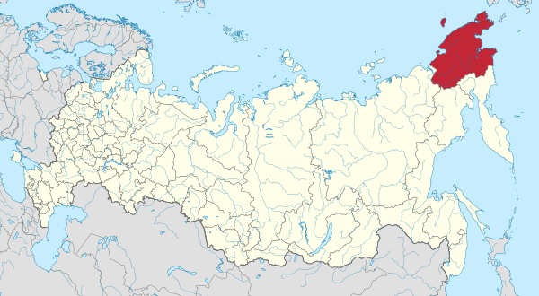
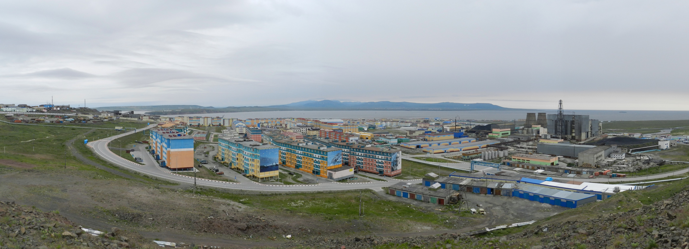
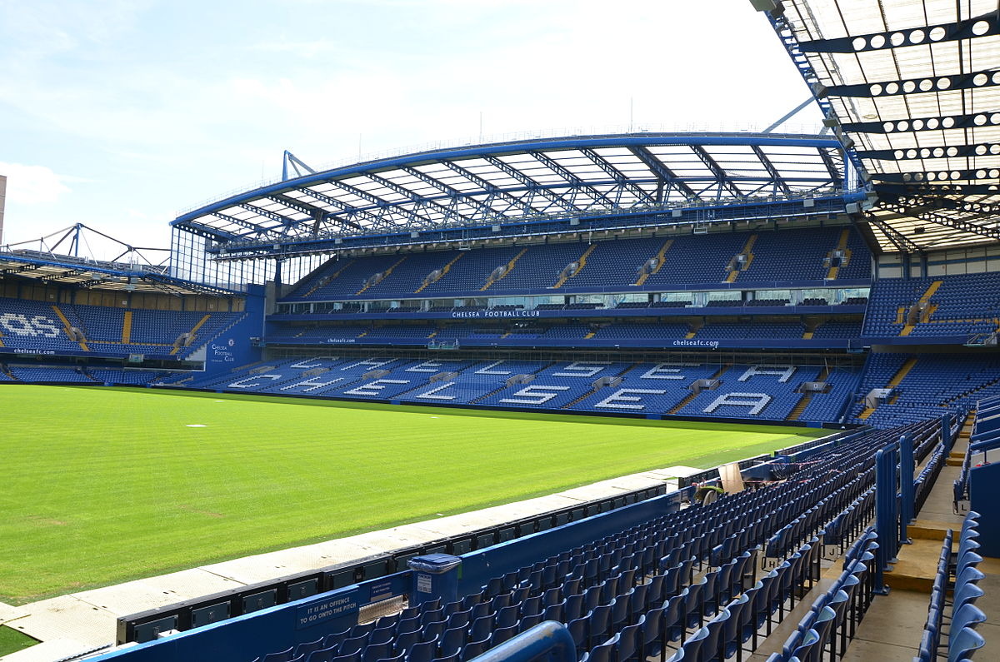

Welcome to CHUKOTKA, where it's currently -30C and so windy that in the capital, Anadyr,
ropes are tied along the street to stop it's inhabitants from blowing away.
It's so cold here that people don't use freezers. They hang their meat in plastic bags
on nails above their windows. Spring and summer, when they arrive in June, last a mere eight weeks.
The bearing sea, one of four seas that wash against Chukotkan shores, freezes hard enough to support weights
of up to 35 tons. There's no crime because it's just too cold!
Where yesterday collides with today
Chukotka is, in fact, a remote territory of Russia. It covers 284.000 square miles of
frozen landscape, bordering the Bering Strait and straddling the Arctic Circle. Nine
time zones ahead of Moscow, It lies right behind the International Dateline, where yesterday
collides with today. There is nowhere on Earth earlier than here. Conditions are cruel,
and there may seem little to be passionate about other than reindeer and weird weather, but Chukotka has
captured the intrest of one of the world's richest men, the oil billionaire Roman Abramovich.

From hospitals and cinemas to supermarkets
Roman Abramovich, whose fortune is in excess of $14 billion, is the world's 22nd-richest person,
and four years ago he was voted governor of Chukotka. Since then, he has been pouring money into
this frozen province. Despite not having been born or raised in Chukotka, he has spent an
estimated $300 million of his personal fortune on this region. In Anadyr alone he has rebuilt the hospital,
dental clinic, and primary school, modernized the airport, opened it's first supermarket and cinema,
and sent 8.500 local children on holiday. He even owns the local radio station, the aptly named
Blizzard FM. Abramovich not only owns a radio station, he also owns a football club, but not in Chukotka,
where it's too cold to play football. The club he owns is over 5,000 miles away in London, England, where,
in 2003, he bought Chelsea Football Club.
Roman Abramovich

-42C and falling
The inhabitants of Chelsea, England, could not imagine the life of the inhabitants of Chukotka.
Locals like to boast that last winter the wind chill took the recorded temperature of -42C down to -100C.
Schools were closed for a month. It's generally too cold for outdoor sports or any kind of café society,
but there are some restaurants in the supermarket. Snow covers the ground from September to May, which means
there are no gardens or woodland: the only flowers are the plastic ones which adorn restaurants tabels.
But for all this, Abramovich has made Anadyr into a boom town. People find it difficult to
understand what he has done and why he has done it.
From reindeer meat to French camembert
Roman Badanov, news editor of Chukotka TV says: `Anything Abramovich does is news here
because so little happens. Why did he choose us? No one knows - it's a secret he keeps to himself.`
But he did choose them and they are grateful. In the supermarket you can buy everything from carved
walrus tusks to French camembert and Greek olive oil. A few years ago there was only frozen
reindeer meat, often eaten for breakfast, lunch and dinner. And Abramovich takes his duty as
a governor seriously - he flies in most months on board his private Boeing 767. He has built a
Canadian-style wooden house, thereby earning himself the unique distinction of owning homes
in St Tropez, Knightsbridge (London), Moscow, and Anadyr. Far from being resentful that he
visits only monthly, the local people are astonished that he comes at all. Such is his popularity
that the locals refer to BA and AA: Before Abramovich and After Abramovich.

`Why doesn't anyone believe I find this place interesting?`
Abramovich himself asks: `Why doesn't anyone believe I find this place interesting? I think
I can change things here - after all, I have achieved success in business.` But some suspect
that he's hoping for vast returns on Chukotka's natural resources, which include 1.2 billion tons
of oil and gas and the second-largest gold reserves in Russia. But his motives don't trouble
most of the 73.000 population. Just one person, Nathalia, who runs the local internet service,
sounded a note of caution: `The people are fools because one day Abramovich will go. This
is our moment, but it is only a moment.`